Development Plan
👥 1. Team and Client Information
Team Name: Cootes Coders
Team Members: Ayesha Hasan, Akil Kanwar, Anas Hayat, Udeshwar Sandhu
Client: Sohail Hasan (Driving Instructor)
App Name: DriveSmart Driving School Web App
🎯 2. Purpose
The DriveSmart web app is a prototype management system designed for a
driving school instructor.
Students can sign up, log in, view available lesson slots, and book lessons, while the
instructor can
manage availability and view upcoming lessons through a clear,
calendar-based interface.
The purpose of this app is to simplify lesson scheduling,
reduce back-and-forth communication, and provide both students and the instructor with a
clear view of bookings. This directly addresses the client’s key needs
identified
in the initial report:
- Reducing manual scheduling via phone or email.
- Tracking instructor availability efficiently.
- Providing a simple, user-friendly booking experience for students.
Our goal is to deliver a functional, realistic prototype that the client can
use or build upon in the future. The app emphasizes a clean, responsive
design
and a clear separation of roles between students and instructors to ensure usability and
scalability.
📊 3. Data Description
Users Table
Purpose: Stores login information and user roles (student or instructor).
| Field Name |
Type |
Additional Details |
| user_id |
INT |
Primary Key, Auto Increment |
| Name |
VARCHAR |
Full Name |
| Email |
VARCHAR |
Unique Email |
| Password |
VARCHAR |
Hashed Password |
| Phone Number |
VARCHAR |
Optional |
| License Type |
VARCHAR |
Instructor/G1/G2/G |
| role |
VARCHAR |
User type ("student" or "instructor") |
Availability Table
Purpose: Stores instructor availability for lesson booking.
| Field Name |
Type |
Additional Details |
| id |
INT |
Primary Key, Auto Increment |
| instructor_id |
INT |
Foreign Key |
| date |
DATE |
Stores a date (yyyy-mm-dd) |
| start_time |
TIME |
e.g. 08:00 (HH:MI:SS) |
| end_time |
TIME |
e.g. 17:00 (HH:MI:SS) |
| is_booked |
BOOL |
Default False |
Bookings Table
Purpose: Stores confirmed student bookings.
| Field Name |
Type |
Additional Details |
| ref_no |
INT |
Primary Key, Auto Increment |
| student_id |
INT |
Foreign Key |
| instructor_id |
INT |
Foreign Key |
| availability_id |
INT |
Foreign Key |
| booking_date |
DATE |
Lesson date (yyyy-mm-dd) |
| booking_time |
TIME |
Lesson Time (HH:MI:SS) |
| status |
VARCHAR |
i.e 'confirmed','cancelled', 'cancel_requested' (Booking status) |
🧩 4. Functionality Overview
4.0 Landing Page Overview
Before accessing any interactive features, users first arrive at the public landing page.
This page contains only static information and serves as the home screen for the driving school instructor.
It introduces the business and provides essential details that any visitor can view without logging in.
The landing page includes the following static sections:
- About the Instructor / Driving School
- Contact Information (phone, email, location)
- Lesson Packages and Pricing
- Frequently Asked Questions (FAQs)
- Student Reviews or Testimonials
A consistent navigation bar appears at the top of the landing page. It includes links to the
static sections as well as a Login / Signup button. This button
redirects users to the authentication system, where they can create an account or log in to
access the student or instructor dashboards.
4.1 Authentication (Student & Instructor Login and Signup)
The authentication system allows both students and the instructor to create accounts, log in,
and access role-specific dashboards.
-
Signup (Student & Instructor):
- Front-end Presentation Tier (HTML/CSS/JavaScript):
A signup form collects name, email, password, role, etc.
JavaScript validates required fields (e.g., non-empty, valid email format,
password length) and provides feedback.
- Back-end Logic and Data Tier (PHP + SQL):
PHP receives the form data, validates it again on the server, hashes the password,
and performs an INSERT into the users table. If the email already exists, PHP
returns an
error message to the user.
-
Login (Student & Instructor):
- Front-end Presentation Tier (HTML/CSS/JavaScript):
A login form collects email and password. JavaScript can provide basic checks
(e.g., fields not empty) and show feedback if the user submits an empty form.
- Back-end Logic and Data Tier (PHP + SQL):
PHP uses a SELECT query on the users table to find
the user by email, verifies the password against the stored hash, and starts a
session if valid. Based on the role, PHP redirects to either the student dashboard
or the instructor dashboard.
-
Logout:
- Back-end Logic and Data Tier (PHP + SQL):
A logout link or button triggers a PHP script that destroys the session and
redirects the user back to the landing or login page. No database changes are
required for logout.
4.2 Calendar (Viewing Instructor Availability)
The calendar functionality allows students to see when the instructor is available for lessons.
It reads from the availability data and presents it in a clear, date-based view.
4.3 Booking (Student Lesson Booking)
The booking functionality allows a logged-in student to confirm a lesson for a specific date and time.
-
Booking Form:
- Front-end Presentation Tier (HTML/CSS/JavaScript):
The booking form includes fields for Name, Email, Phone Number, date, time (or a selected slot),
and possibly
additional notes. If the student comes from the calendar view, the date and time can be
pre-filled. JavaScript validates that a slot is selected and provides feedback if
required fields are missing (prevents default when submit button is pressed for invalid/missing
data).
- Back-end Logic and Data Tier (PHP + SQL):
PHP receives the booking request and checks the selected slot in the
availability table using a SELECT query to confirm that
'is_booked = FALSE'. If the slot is still free:
- PHP performs an INSERT into the bookings table
- PHP then performs an UPDATE on the availability table
to set 'is_booked = TRUE' for that slot.
If the slot is no longer available, PHP returns an error message and the front-end
displays a warning to the student.
-
Booking Confirmation & Feedback:
- Front-end Presentation Tier (HTML/CSS/JavaScript):
After a successful booking, the student sees a confirmation message (e.g., “Your lesson
on [date] at [time] has been booked”).
- Back-end Logic and Data Tier (PHP):
After inserting the booking, PHP can redirect the student to their dashboard
4.4 Dashboards (Student & Instructor Views)
The dashboards provide a role-specific overview and summary. Students see their upcoming lessons and
progress (total hours driven, etc.),
while the instructor sees their schedule and availability.
-
Student Dashboard:
- Front-end Presentation Tier (HTML/CSS/JavaScript):
The student dashboard displays a list or table of upcoming lessons.
It may also show a summary such as “Total Hours Driven”. CSS is used
to create a clean, card-based or table layout. Each booking includes a “Request Cancellation”
button, allowing students to request that a booking be cancelled.
JavaScript can be used to display a confirmation message before sending the request.
- Back-end Logic and Data Tier (PHP):
PHP uses a SELECT query on the bookings table to retrieve all upcoming
bookings for the logged-in student. PHP calculates any summary data (e.g., total hours)
and passes it to the dashboard template. When a student requests a cancellation, PHP processes the request using
the booking ID and performs an UPDATE on the bookings table, changing
the status from 'confirmed' to 'cancel_requested'. The booking is not immediately removed from the system.
-
Instructor Dashboard:
-
Front-end Presentation Tier (HTML/CSS/JavaScript):
The instructor dashboard shows “Today’s Lessons” and “Upcoming Lessons” in a list or table.
Each entry includes details such as student name, date, and time, with CSS used to create a
clean
and easy-to-read layout.
In addition, the dashboard displays all availability slots. Each slot
includes a
delete button, allowing the instructor to remove availability. A simple form is
also provided
to add new availability slots by entering a date and time. JavaScript can be
used to confirm
deletion actions. The instructor dashboard also includes a section for “Cancellation Requests”,
which displays all bookings where the status is 'cancel_requested'. Each request includes an
Approve button.
-
Back-end Logic and Data Tier (PHP):
PHP uses SELECT queries on the bookings table (and also users and
availability tables)
to retrieve all bookings for the instructor. Queries can filter by date to separate today’s
lessons
from future ones.
When the instructor adds an availability, PHP processes the
data
and performs an INSERT into the availability table. When a delete button is
clicked,
PHP processes the request using the slot ID and performs a DELETE query to
remove
the selected availability slot from the database.
PHP uses a SELECT query to retrieve all bookings where status = 'cancel_requested'.
When the instructor clicks approve, PHP performs an UPDATE on the bookings table to
change the status to 'cancelled', and updates the corresponding availability slot to set 'is_booked = FALSE',
making it available again.
Navigation
The application includes a simple navigation bar to allow users to move between key sections of the system.
The navigation bar contains links to the Calendar, and
Logout pages.
💼 5. Roles of Team Members
- Akil: Authentication/login/signup
- Ayesha: Booking Form
- Anas: Calendar/availability
- Udeshwar: Dashboard
💻 6. Wireframes
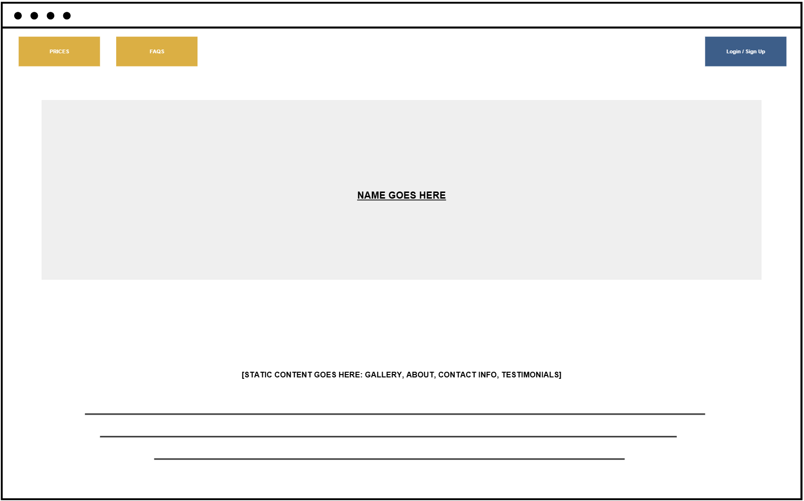
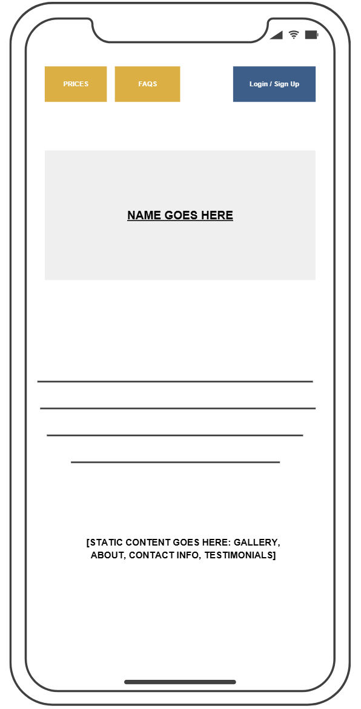
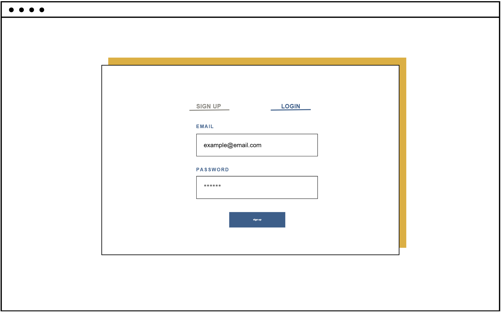
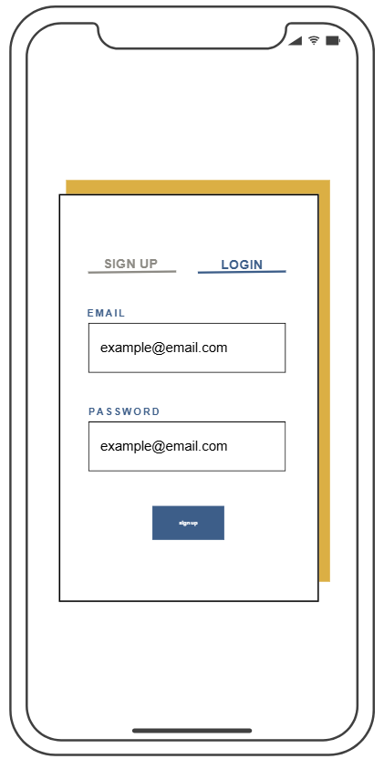
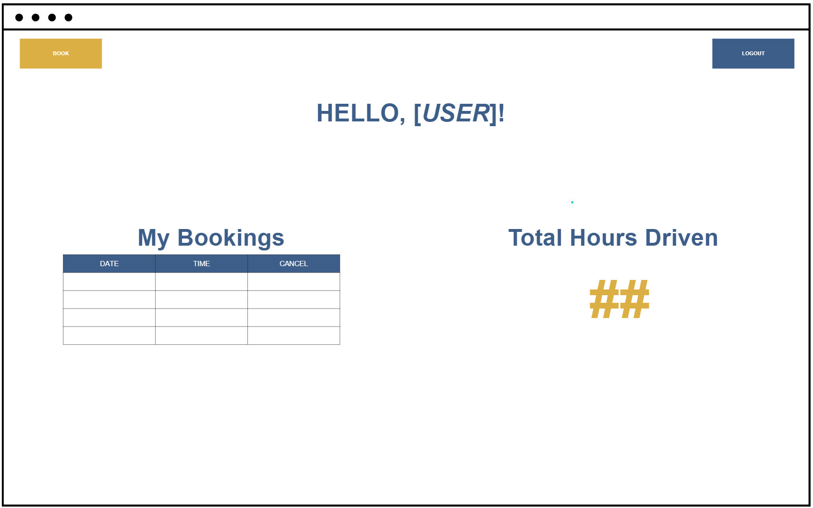
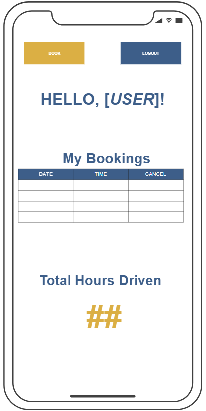
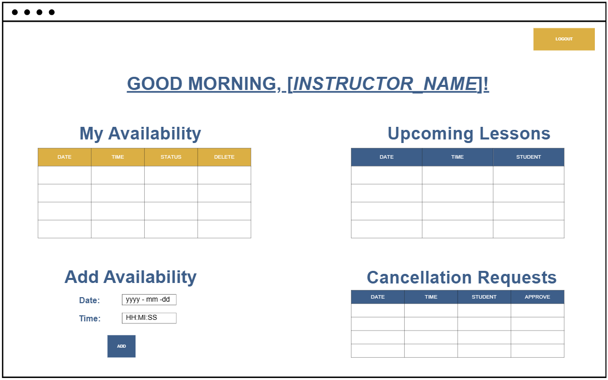
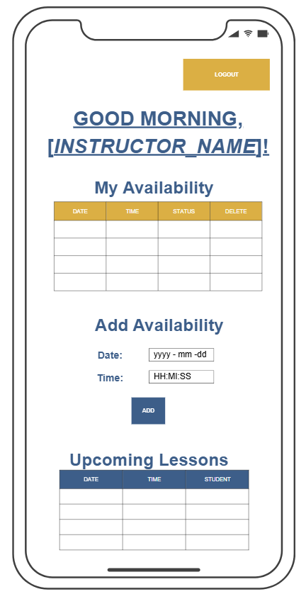
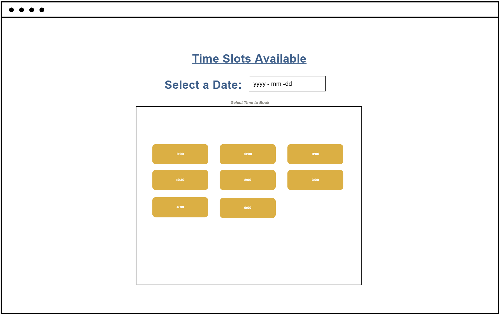
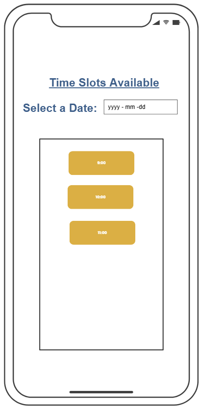
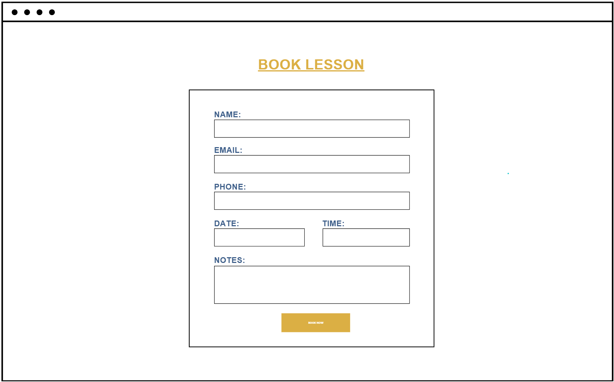
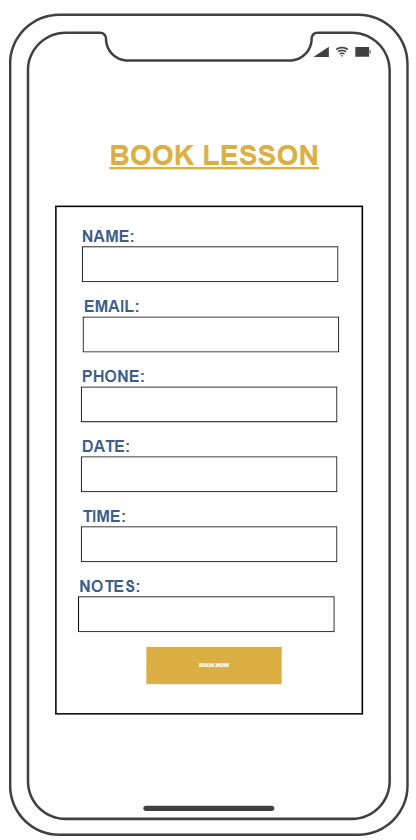
📈 7. Incremental Delivery Plan
For our first increment, our goal is to establish the foundational structure of the web app.
This includes setting up the required database tables, completing the general static layout
of the landing page, and implementing small but functional prototypes from each team member.
These prototypes represent early versions of the core features that will be expanded in later
increments.
The following deliverables will be completed by each team member for Increment 1:
- Akil: Working login and signup forms that successfully create a user and start a session.
- Ayesha: A basic booking form that submits a lesson booking into the database.
- Anas: A simple availability page that displays time slots from the database.
- Udeshwar: Basic instructor form to add availability slots in dashboard.
👮 8. Client Feedback
The client highlighted the importance of maintaining control over lesson bookings. They explained that
“students shouldn’t be able to cancel or delete lessons on their own without approval,” which led to the
decision to restrict direct cancellation. Instead, students must now request changes, which are reviewed
and approved by the instructor.
The client also suggested improving user tracking within the system. They mentioned that “it would be helpful
to quickly see which students are new and which ones have booked before,” which resulted in adding a
'booking_count' field to the users table. This value starts at 0 and increases each time a user
makes a booking, allowing the system to identify first-time users.
In terms of design, the client preferred a more structured and visually clear layout. They noted that
“using tables instead of long lists would make the information much easier to read,” so the interface
should make use of visually apealling and clear table-based layouts for displaying bookings and user data in a more organized and
user-friendly way.